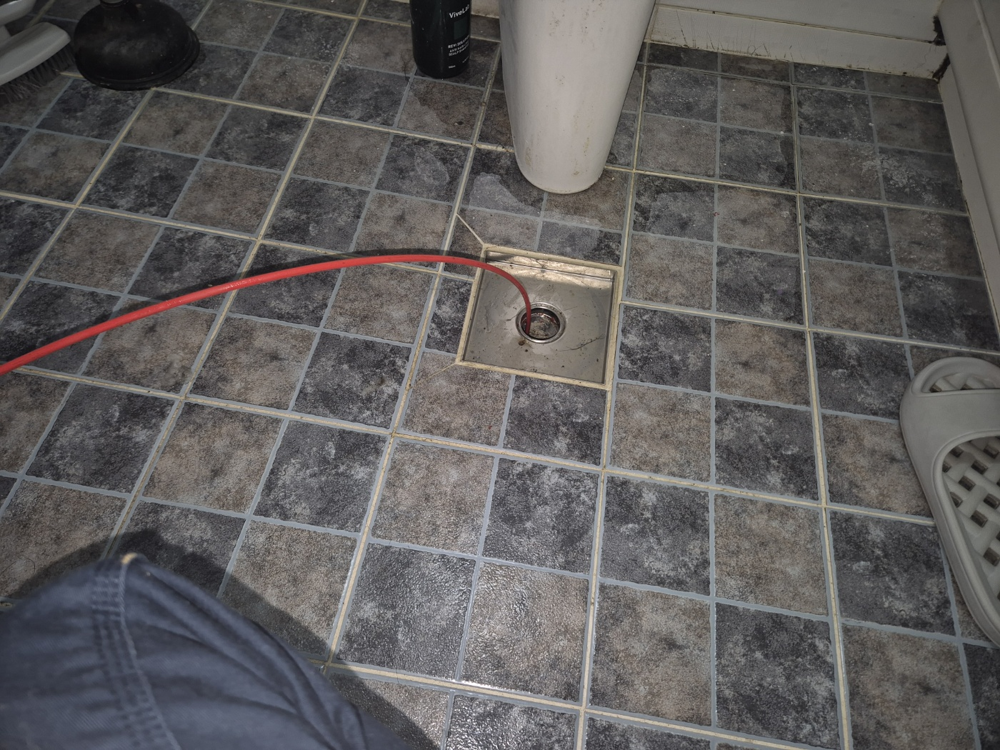
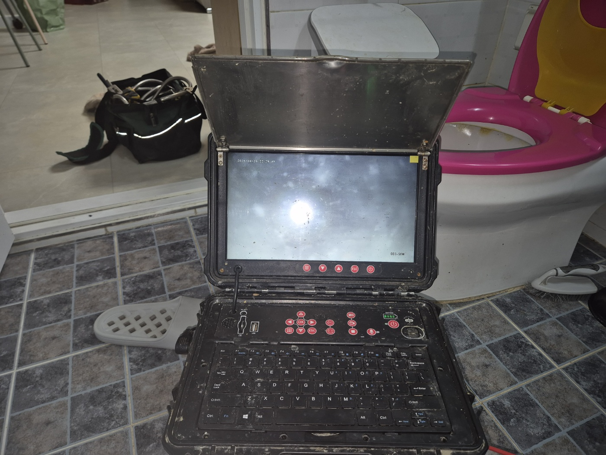
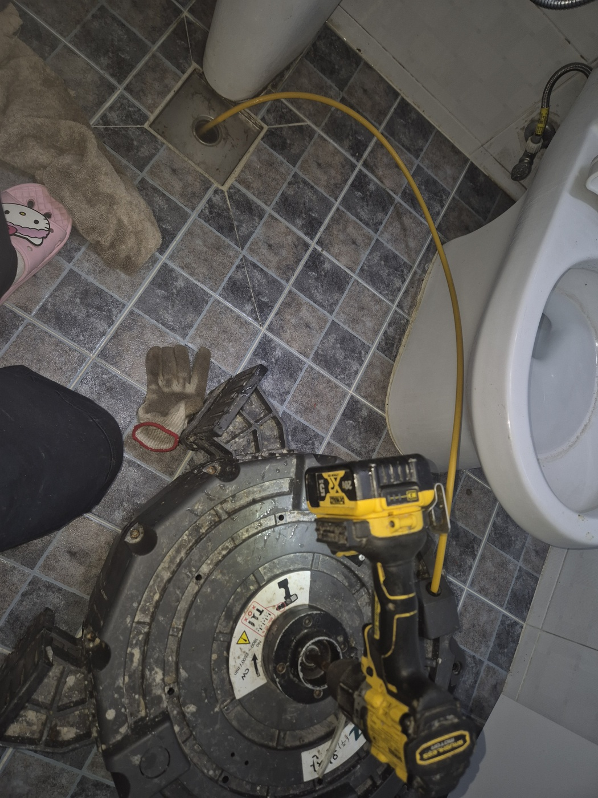
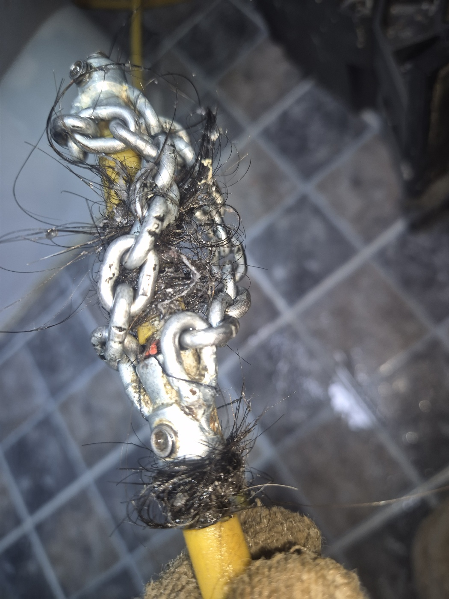
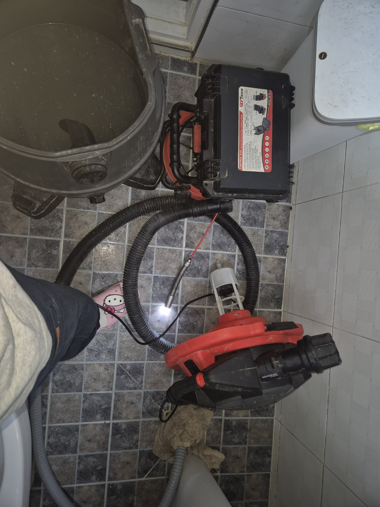
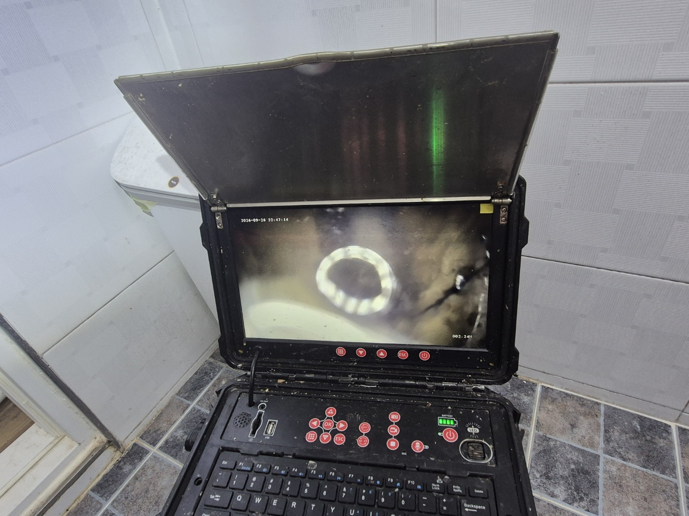
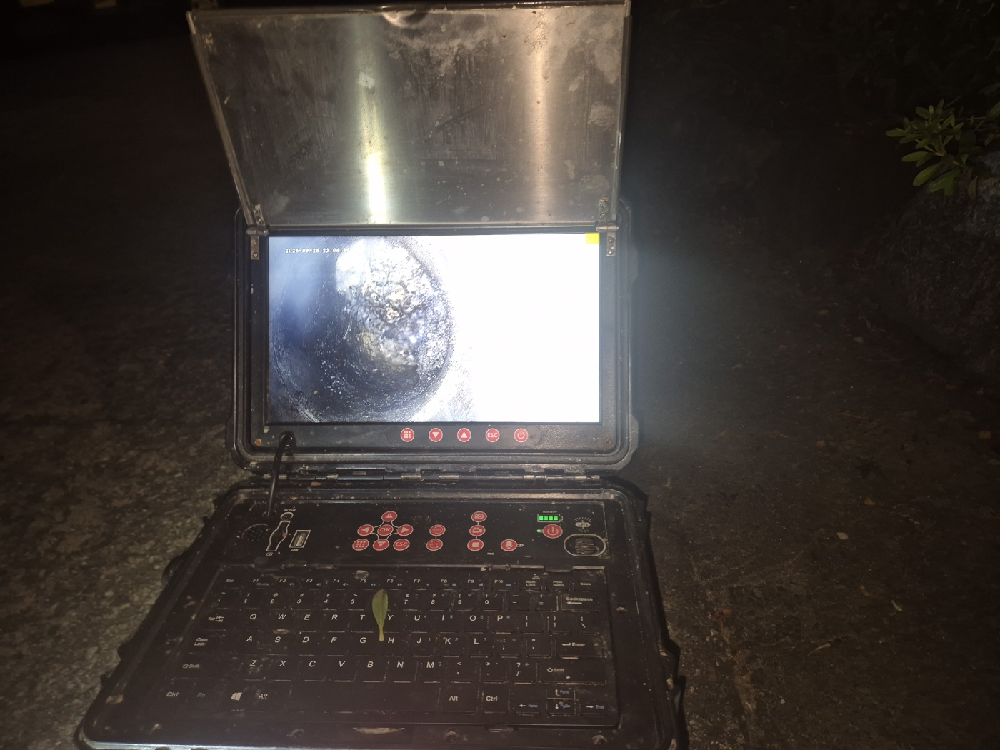
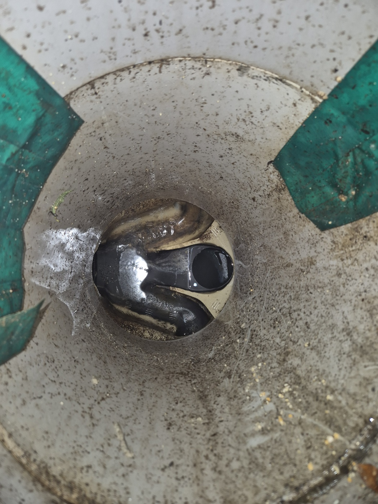

안녕하세요.. 고고고 설비입니다.. 오늘은 안성시 안성동에 있는 단독주택에서 하수구막힘 신고를 받고 다녀온 현장입니다. 화장실, 마당 할 것 없이 집 전체 배수가 느려졌다고 하셨어요. 오래 사신 집이라 배관도 집과 함께 나이를 먹은 상태였습니다.
먼저 화장실 바닥 배수구부터 내시경 호스를 넣어 안쪽 상태를 확인했습니다. 단독주택이라 배관이 마당 쪽까지 길게 이어져 있어서, 정확히 어느 구간이 막혔는지부터 짚어야 했어요. 집 구조상 배관 라인이 한 군데가 아니라 실내외를 모두 살펴봐야 하는 현장이었습니다.
모니터 화면으로 보니 뿌옇게 흐려질 정도로 이물질이 가득한 구간이 있었습니다. 오래된 주택이라 배관 안쪽에도 세월이 느껴지는 상태였고, 카메라를 조금씩 밀어 넣을 때마다 화면이 점점 어두워지는 걸 보고 막힘이 꽤 길게 이어져 있다는 걸 알 수 있었어요.

화장실 바닥 배수구에 전동 샤프트 장비를 설치하고 케이블을 밀어 넣어 막힌 부분을 반복해서 뚫어나갔습니다.

케이블을 빼보니 머리카락과 섬유질이 엉겨 붙어 덩어리째 딸려 나왔습니다. 오랫동안 쌓인 게 한눈에 보일 정도였어요.

실내 작업을 마친 뒤 마당으로 나와 고압세척 장비와 통을 준비해서, 배관이 이어지는 바깥쪽 구간까지 함께 세척했습니다. 통에 받아보니 세척하면서 밀려 나온 찌꺼기가 꽤 많이 모였어요.

세척 후 다시 내시경으로 안쪽을 확인하면서 남은 구간에 이물질이 없는지 점검했습니다. 처음 흐릿했던 화면이 한결 밝아진 게 눈에 띄었어요.

작업이 생각보다 길어져 날이 어두워졌는데도, 끝까지 내시경으로 마당 쪽 맨홀 연결부까지 확인하고 마무리했습니다. 랜턴 불빛에 의지해 작업해야 했지만 중간에 멈추면 다시 처음부터 확인해야 하는 상황이라 끝까지 진행했어요.


단독주택은 배관이 마당을 가로질러 길게 이어지는 경우가 많아서, 한 구간만 뚫어서는 끝까지 해결이 안 되는 경우가 종종 있습니다. 실내외를 함께 점검해드려야 재발 없이 마무리되더라고요. 오래된 주택일수록 배관 전체 상태도 함께 봐드리는 게 다음 막힘을 예방하는 길입니다.
고고고 설비는 주택, 아파트, 원룸, 상가, 공장의 생활 하수 오수 배관을 관리해 주는 업체입니다. 고고고 설비에 전화 주시면 친절상담 정확한 진단 확실한 해결로 보답해 드리겠습니다!!